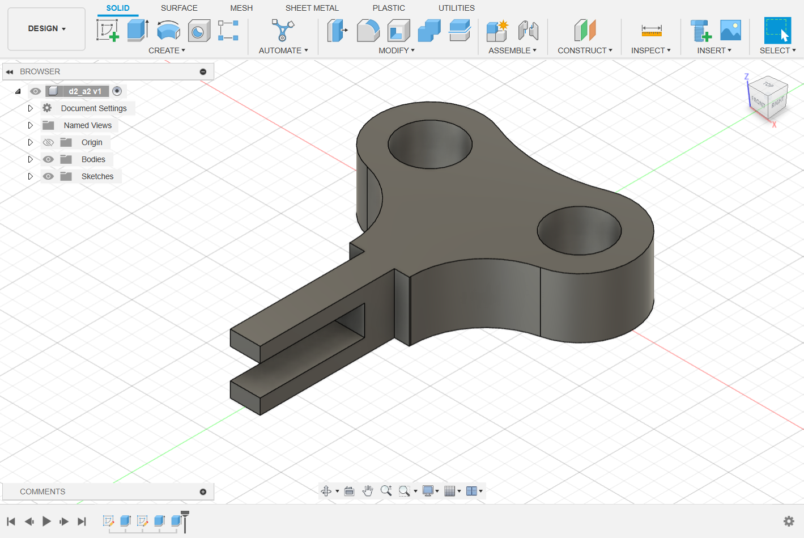
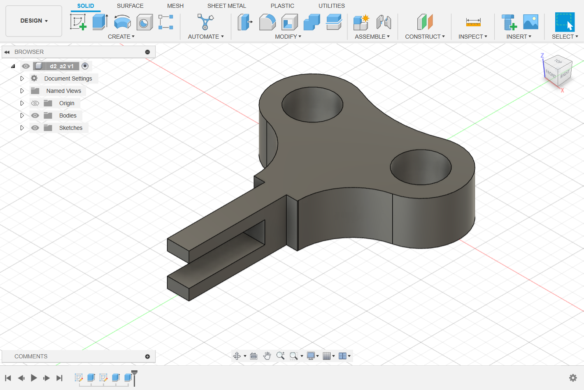

The Second Module is COMPUTER AIDED DESIGN Includes Fusion 360
Day 1
On day 1 of studying Fusion 360, we delved into its foundational aspects, focusing on its user interface, navigation tools, and basic modeling techniques. We learned how to create primitive shapes like cubes, cylinders, and spheres, and manipulate them using tools such as extrusion, fillet, and chamfer. Additionally, we explored the timeline feature, which allows for non-destructive editing and parametric modeling. Understanding these fundamental concepts laid the groundwork for more advanced 3D modeling tasks in Fusion 360, empowering us to design and create objects with precision and efficiency.

 
